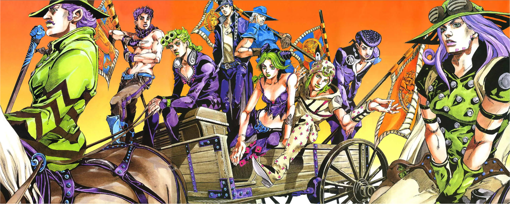
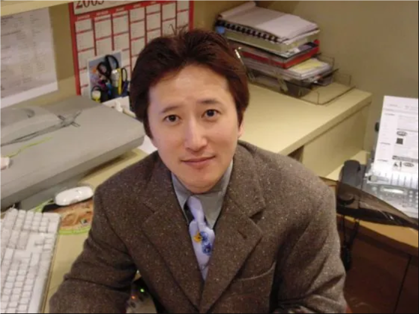

| 返回首页 | 作品一览 | 战斗“潮流” | 黄金精神 | 漆黑意志 |
|  | ||||
《JOJO的奇妙冒险》是由日本漫画家荒木飞吕彦所创作的漫画作品，简称JOJO。其独特的画风，令人惊叹的剧情，这么多年以来几乎不会让人厌倦，可谓是青少年漫画的必看作。曾在2006年日本文化厅媒体艺术节中评选为第二佳漫画，现连载已有九部作品
如荒木先生本人所说，JOJO的主题是生存及命运， 在它的故事中展现了人类的努力与伟大，更描绘了他们之间的友谊和感情。JOJO家族的八代人都拥有着特殊的能力。除了一代和二代（第三部时开始使用替身，只有老年乔瑟夫同时使用波纹和替身，在第七部中出现了平行世界里对应波纹的回旋）用的是“波纹气功”之外，后续引入了“替身”的概念，把特殊能力加以实体化、具象化 到底什么是“替身”？根据荒木飞吕彦个人的解释，他想像中的替身，是一种潜在意识、或者类似灵魂之类的东西，根本非肉眼可见。角色与角色之间的格斗，真正比的是智慧、心理战。他所画的“替身”，其实是将这些抽象的个人特质具象化，有些人擅长思考、有些人行动力迅速积极…等，变成一个个有造型的实体。“替身”的原名是Stand，Stand是荒木飞吕彦自行设定并赋予意义的，在字典上并无法找关於超能力的解释，他认为这字眼有着站在身旁的意味，替身应该像是影子或是幽灵，是人的一部分 |
||||
 荒木飞吕彦（时年54） |
虽然《JOJO》已经有35年的历史了，荒木却是非常“年轻”的漫画家（见左图童颜） 他从专校毕业后，便投身漫画创作，处女作是《武装扑克》（以西部小镇械斗为背景），之后除了发表《魔少年》、《巴欧的来访者》、《曼妙的爱林》等短篇之外，全部精神都花在《JOJO》这部长篇巨作 未来如何发展不得而知，但是《JOJO》跳脱现前超人幻想漫画类型的窠臼则是毋庸置疑的 |
|||